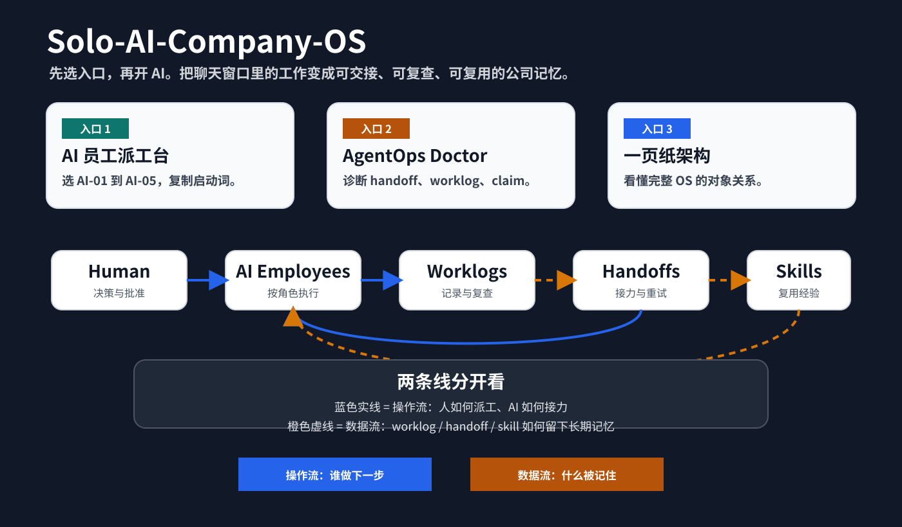

一人公司的底层命题
我在围绕一个问题搭建个人实验室：AI 时代，一个人如何把阅读、学习、审计、写作和 Agent 协作组织成稳定产能，而不是一次次聊天窗口里的短期兴奋？我反复测试的答案是长期记忆、证据回执、可复查决策，以及持续迭代的学习循环。
工作材料
从学习到审计，再到 Agent 协作
六个 AI 人效系统
它们不是零散项目，而是同一条路线：让一个人借助 AI 保存思考、组织行动、验证结果，并在失败之后继续迭代。公开项目给出仓库或网页，私有系统只展示能力边界。
一人公司原则
不是把 AI 当聊天工具，而是把它组织成可以长期运行、可以复查、可以交接的工作系统。
思考
这里放个人思考、构建笔记，以及这些系统继续演化时留下的判断。